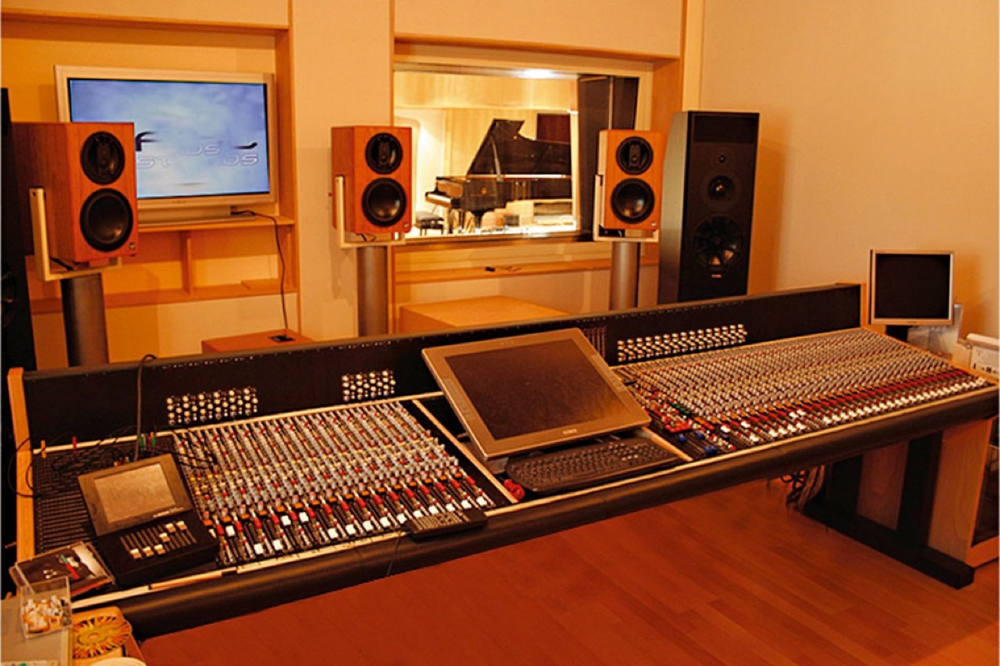
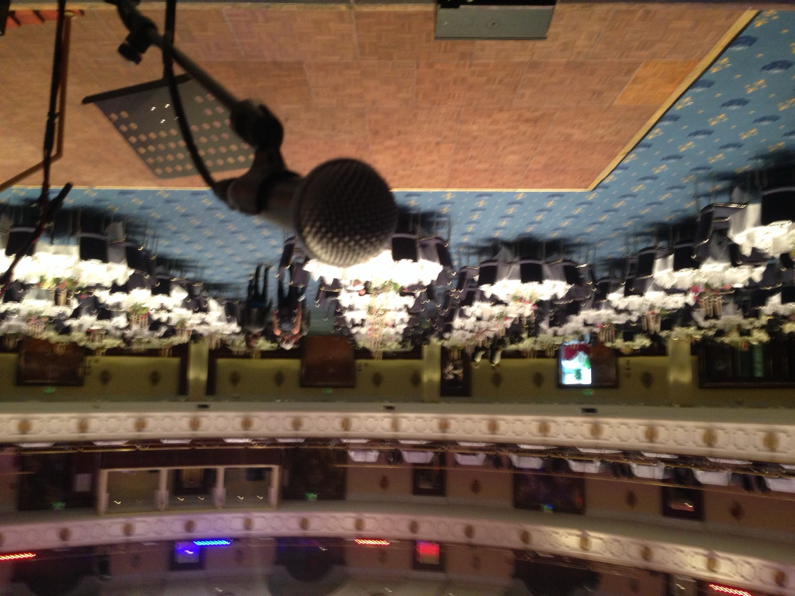
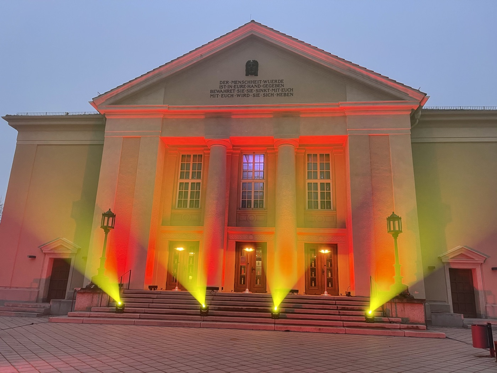
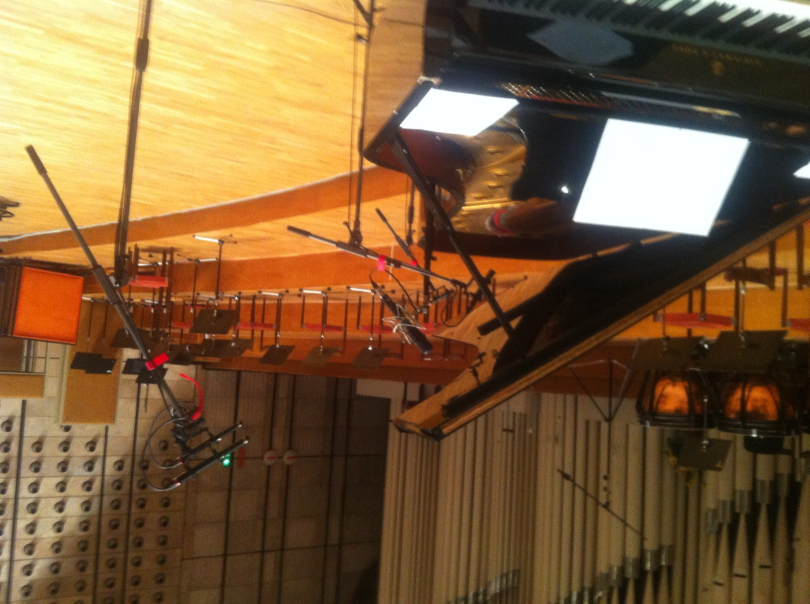
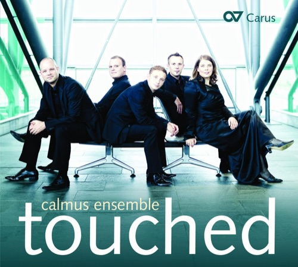
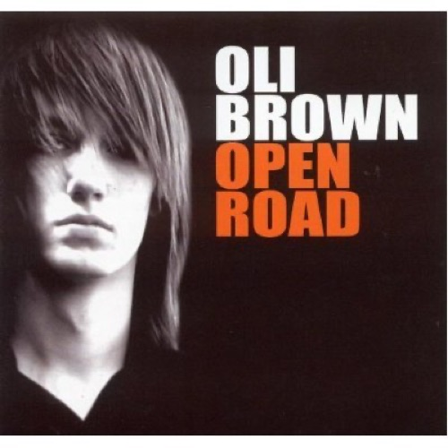
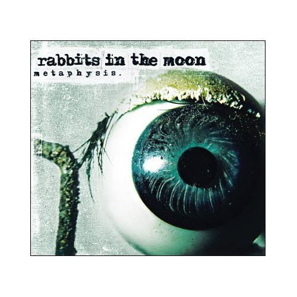

Tonmeister · Berlin
Kai Mäder
Klang für Bühne, Studio und Sendung: von der Planung der Technik bis zum letzten Ton der Vorstellung.
Projekt anfragen ReferenzenÜber mich
Über 25 Jahre Erfahrung zwischen Orchestergraben und Regieraum
Seit meinem Studium an der Hochschule für Musik und Theater Leipzig im Jahr 2000 arbeite ich als freiberuflicher Tonmeister (Musiktheater, Live, Recording & Broadcast) und als Musiker (Gitarre & Bass) in Deutschland, Österreich und der Schweiz.
Inzwischen durfte ich an Hunderten von Aufnahmen, Musiktheaterproduktionen, Konzerten, Theater-, Radio- und TV-Produktionen mitwirken.
Mit diesem Erfahrungsschatz und viel künstlerischem Feingefühl betreue ich Veranstaltungen jeder Art – von der Planung der technischen Ausstattung über die Organisation bis zur Durchführung in den Bereichen Ton und Video.

Leistungen
Was ich für Sie mache
Musiktheater & Oper
Tonregie, Mikrofonierung und Beschallung für Musical, Oper und Theater – im Repertoire wie auf Tour.
Live Sound & Konzert
FOH- und Monitormischung für Konzerte, Festivals, Galas und Messen, inklusive Systemplanung.
Recording, Mix & Mastering
Aufnahmen von Klassik bis Rock, im Studio oder vor Ort, bis zum fertigen Master.
Broadcast
Tonmischung für Radio- und TV-Produktionen, Livestreams und Aufzeichnungen.
Pre- & Postproduktion
Playbacks, Zuspielungen, Sounddesign und Nachbearbeitung für Bühne und Video.
Studio- & Akustikdesign
Planung von Tonstudios, Probe- und Wohnräumen, Kabinen und Konferenztechnik. Mehr erfahren →



Referenzen
Ausgewählte Produktionen
Eine Auswahl an Alben, an denen ich als Toningenieur beteiligt war.









Hören & Sehen
Videos
Die Videos werden erst nach Klick von YouTube bzw. Vimeo geladen. Dabei werden Daten an diese Anbieter übertragen – siehe Datenschutz.
Kontakt
Lassen Sie uns über Ihr Projekt sprechen
Ob Musiktheaterproduktion, Konzert, Albumaufnahme oder ein neuer Regieraum – ich freue mich auf Ihre Nachricht.
- info@blackwoodaudio.de
- Telefon
- 0176 / 47 11 86 41
- Studio
- Berlin-Kreuzberg